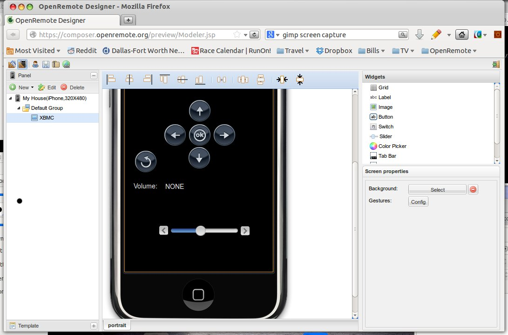

|
This page last changed on Oct 14, 2012 by othmark.
I am trying to save and restore my Open Remote Designer configuration using the zip-file option.
Both (download and upload) appear to work - the openremote.zip-file is being created and when I upload the file the controller reports
<pre>Upload Complete. </pre>
However,nothing is actually uploaded (I tested creating test devices and screens before the export, which I then deleted before the upload).
I am using Controller 2.0.0 and Firefox 15.1 on MacOSX 10.8 (Safari appears to download and unzip the file in one process - so only the decompressed file structure arrives, which is why I use Firefox for the download).
Anyone experiencing similar behavior?
Thanks much,
Othmar
|
I am not sure I understood the question. There is no restore in the Designer.
Upload to the controller is just an alternative to the online sync.
It does not import the information back into the designer.

Posted by mredeker at Oct 15, 2012 08:30
|
|
Understood. I was under the impression "upload" would refer to uploading and restoring data to the OpenRemote Designer. So I assume there is no way to restore an older project state back into Designer? By accident I had deleted a device and had to manually re-enter the information. In other occasions I had wished there was a "go back to previous version" function. Maybe this could be a feature for a future release.
Posted by othmark at Oct 16, 2012 01:25
|
|
Undo and also import are on the todo list and partly worked on 
If you need something restored Juha might be able to see if he has an older version of your design in the backup.
Posted by mredeker at Oct 16, 2012 08:29
|
|
Marcus, I have a problem regarding this as well. Somehow I have lost a slider below the panel cutoff. I can't grab it with the mouse in the designer but it shows on the remote display. I can modify the coordinates in XML but need to upload the change. Is an openremote.zip upload feature still not available?
Regards,
Kirby
Posted by tbowman at Oct 28, 2013 05:14
|
|
The upload feature is not yet available and will anyway not work with the controller/panel.xml but with some other format, so it would not solve your issue.
Could you post a screenshot from the designer, because I'm not sure I understand your issue. If a widget coordinates make it appear in the console, it should also appear in the designer "within the screen canvas" ?
Thanks,
Eric
Posted by ebariaux at Oct 28, 2013 09:00
|
|
Eric,
I downloaded panel.xml (openremote.zip) to show it has 3 sliders below. 2 of them dont show up on the designer.
...
<absolute left="67" top="495" width="198" height="44">
<slider id="39" passive="true" vertical="false">
<min value="0" />
<max value="100" />
</slider>
</absolute>
<absolute left="67" top="484" width="198" height="44">
<slider id="41" passive="true" vertical="false">
<min value="0" />
<max value="100" />
</slider>
</absolute>
...
<absolute left="71" top="368" width="200" height="55">
<slider id="43" vertical="false" passive="false">
<link type="sensor" ref="3601121" />
<min value="0" />
<max value="100" />
</slider>
</absolute>
...

Posted by tbowman at Oct 29, 2013 02:05
|
|
Thanks, I see.
Unfortunately, I don't see any way around this with the current version of the Designer.
There are a few things in the roadmap that hopefully will help to deal with this situation, but I would guess they're months away.
So for now, I would say add 2 additional sliders and leave the 2 "hidden" ones in there, it shouldn't hurt.
Once the designer will allow access to those, you can go back and delete them.
Posted by ebariaux at Oct 29, 2013 09:35
|
|
{kind=link}